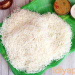
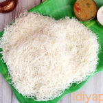

Idiyappam
Information:
Prep Time: 5 mins
Cook Time: 10 mins
Total Time: 15 minutes
Yield: 2 to 3 servings
Ingredients:
- Water - 2 Cups
- Oil (preferably Gingelly oil) - 1 tsp + more as needed
- Rice flour | Idiyappam flour - 1 1/2 Cups
- Salt - 1/4 tsp
Procedure:
- First, add the oil to the water and bring it to a boil. Once the water starts to boil, turn off the flame.
- In a separate bowl, add the rice flour, salt and mix well. Add about 3/4 Cup of the hot water to the rice flour. Stir with a spatula. Now, continue to add the water little by little to the rice flour and mix well until a soft, smooth and non-sticky dough is formed.
- Once you are able to handle the dough by hand, knead it nicely for 1-2 mins. Grease the inside portion of the idiyappam press. Grease your palm with oil, take a portion of the dough, smoothen it out in your palm and fill it in the press. Similarly, grease the steamer plate. Gently press the idiyappam dough onto the steamer plate
- Steam the idiyappam for about 5 mins, until cooked through. Let the idiyapam to cool down a bit, before gently removing from the steamer plate and transferring to a serving plate.
- Steam the idiyappam for about 5 mins, until cooked through. Let the idiyapam to cool down a bit, before gently removing from the steamer plate and transferring to a serving plate.